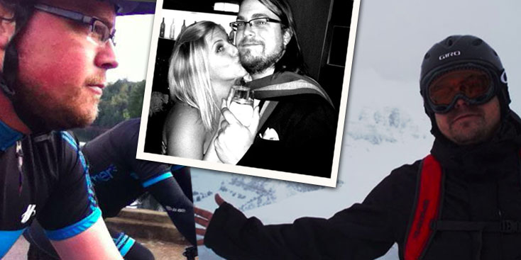

Wil Everts
User Experience Web Geek
I’m a veteran web designer and developer obsessed with building intuitive, pragmatic, and surprising web experiences that are as beautiful as they are functional. My experience working on large scale web products comes from my time working with companies like Yammer, Wikia, Top Fans, and Zivity.
I live in San Francisco with my girlfriend, Karie, and our English Bulldog, Cash. I love cycling, snowboarding, karaoke, baseball (Go Cardinals!), literature, poker, and hacking on web applications.